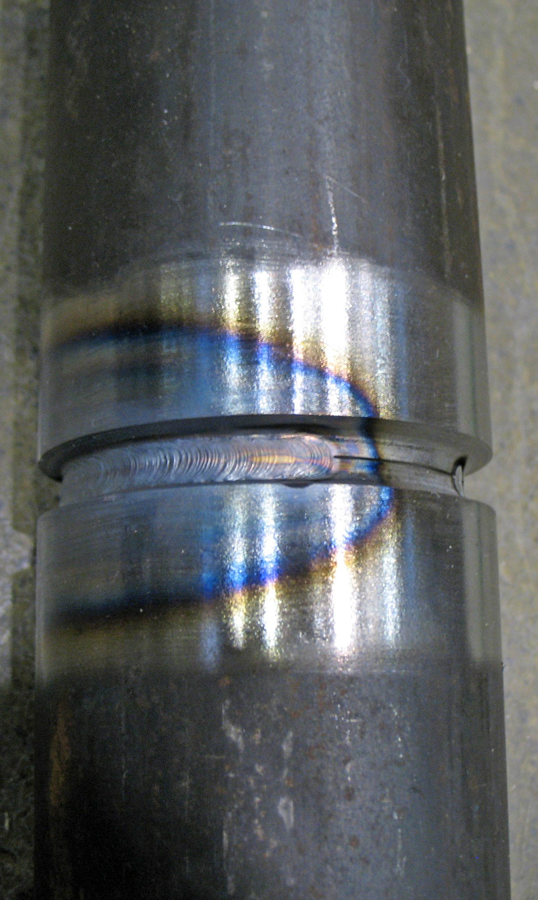

Manual Técnico McVill ERP
Documentación completa de módulos, fórmulas, hardware, flujos de proceso e integración de IA para manufactura metalmecánica industrial.
¿Qué es McVill ERP? Introducción
McVill ERP es un sistema de planificación de recursos empresariales diseñado específicamente para la industria metalmecánica. Integra manufactura, calidad, capital humano, comercial, ingeniería y análisis financiero en una sola plataforma impulsada por Inteligencia Artificial.
Capacidades principales
- +35 módulos integrados — desde dashboard hasta PPAP
- IA Gemini en producción, calidad, cotizaciones, inspección visual y voz
- Multi-tenant — cada empresa tiene sus datos completamente aislados
- Tiempo real — Supabase Realtime sincroniza estados al instante
- Hardware ready — escáneres, cámaras IP, tablets, impresoras de etiquetas
- Accesible desde cualquier dispositivo — navegador web, sin instalación
Arquitectura del Sistema
┌─────────────────────────────────────────────────────────┐
│ FRONTEND — React 19 + Vite + TypeScript │
│ Tailwind CSS v4 · Framer Motion · Lucide Icons │
└────────────────────────┬────────────────────────────────┘
│ HTTPS / WebSocket
┌────────────────────────▼────────────────────────────────┐
│ SUPABASE (Backend as a Service) │
│ PostgreSQL · Auth · RLS · Realtime · Storage · Edge Fn │
└──────────┬─────────────────────────────┬────────────────┘
│ REST API │ API Key
┌──────────▼──────────┐ ┌─────────────▼──────────────┐
│ Base de datos │ │ Google Gemini AI │
│ Multi-tenant RLS │ │ gemini-2.5-flash-lite │
│ Migraciones SQL │ │ Gemini Vision (imágenes) │
└─────────────────────┘ └────────────────────────────┘
| Capa | Tecnología | Propósito |
|---|---|---|
| Frontend | React 19, TypeScript, Tailwind CSS v4 | Interfaz de usuario responsiva |
| Backend | Supabase (PostgreSQL 15) | Base de datos, autenticación, RLS |
| Auth | Supabase Auth + JWT | Sesiones seguras por tenant |
| IA General | Google Gemini 2.5 Flash Lite | Chat, análisis, cotizaciones |
| IA Visión | Gemini Vision | Inspección de piezas, planos |
| IA Voz | Gemini Flash Native Audio | Voice Link (comandos de voz) |
| Deploy | Vercel (frontend) + Supabase Cloud | CDN global, auto-deploy |
| Tiempo Real | Supabase Realtime | Sincronización en vivo |
Roles y Permisos
| Rol | Nivel | Módulos con Acceso |
|---|---|---|
| CEO | Máximo | Todos los módulos + Configuración + Godmode completo |
| Sistemas | Admin | Igual que CEO — administrador técnico |
| Gerente | Alto | Todos los módulos + Reportes gerenciales |
| Supervisor | Medio-Alto | Planta, Viajeros, Calidad, Ingeniería, Mantenimiento |
| RH | Medio | Capital Humano, RH, Nómina, Asistencia |
| Finanzas | Medio | Finanzas, Costos, Costeo, Nómina (solo lectura) |
| Empleado | Básico | Dashboard, Inventario, Producción, Viajeros, Calidad, HSE |
Temas de Color
Cada usuario puede elegir su tema desde el header (barra superior). El cambio es instantáneo y se guarda por usuario.
| Tema | Dark Mode | Light Mode | Perfil |
|---|---|---|---|
| 🔵 Azul Industrial | Fondo #020617 · Acento #4FA5FF | Fondo #F0F4F8 · Acento #1D4ED8 | Corporativo · Predeterminado |
| ⚫ Slate Neutro | Fondo #0F172A · Acento #94A3B8 | Fondo #F8FAFC · Acento #475569 | Minimalista · Sin color dominante |
| 🟢 Esmeralda | Fondo #020617 · Acento #34D399 | Fondo #F0FDF9 · Acento #059669 | Producción · Planta industrial |
| 🟠 Carbon | Fondo #0A0A0A · Acento #FF6B00 | Fondo #FAFAF9 · Acento #C2410C | Negro puro · Naranja brillante |
Dashboard — Tablero Principal
Vista central del ERP. Muestra el estado del negocio en tiempo real con KPIs, alertas y accesos rápidos.
KPIs en Tiempo Real
- OEE (Overall Equipment Effectiveness) — eficiencia global de equipos
- FTT (First Time Through) — % piezas buenas sin retrabajo
- Entregas a tiempo — % órdenes entregadas en fecha prometida
- Margen promedio — rentabilidad media de órdenes activas
Alertas Predictivas
- 🔴 Rojo = acción inmediata requerida
- 🟡 Amarillo = atención pronto
- 🟢 Verde = dentro de parámetros normales
Control de Planta
Gestión completa de Órdenes de Trabajo (OT) desde creación hasta entrega, con rastreo por etapa de manufactura.
Ciclo de vida de una OT
- Se crea la OT con número de parte, cliente, cantidad y fecha de entrega
- Se asigna ruta de proceso: Corte → Doblez → Soldadura → Maquinado → Pintura → Ensamble
- Operador inicia etapa: registra hora de inicio y número de empleado
- Al completar etapa: avanza automáticamente a la siguiente, registra tiempo real
- Inspección visual IA en puntos críticos — crea NC si detecta defecto
- OT completada: actualiza inventario de producto terminado
Centros de Trabajo
| Centro | Código | Procesos típicos |
|---|---|---|
| Corte Láser | LASER | Corte CNC, perforado, grabado |
| Doblez | DOBLEZ | Plegado, formado en frío |
| Soldadura | SOLDADURA | MIG, TIG, punto, proyección |
| Maquinado CNC | CNC | Torneado, fresado, taladrado |
| Pintura | PINTURA | Granallado, primario, acabado |
| Ensamble | ENSAMBLE | Armado, torqueo, empaque |
Viajeros Industriales
El Viajero es el pasaporte digital de cada pieza. Acompaña la orden de fabricación desde la creación hasta la entrega al cliente, registrando cada operación, tiempo, operador y resultado de calidad.
Estructura de datos del Viajero
Encabezado: cliente · número_parte · revisión · OC_cliente cantidad_orden · cant_fabricada · fecha_orden · fecha_entrega cotización · horas_estimadas_totales · notas Operaciones: centro_trabajo · tiempo_estimado · tiempo_real estado (pendiente|en_proceso|completado) · operador · secuencia Materiales / Recogidas: clave_material · descripción · cantidad · calibre código de barras para escaneo en almacén BOM — Componentes: sub-órdenes hijas · descripción · cantidad · fechas
Estados del Viajero y colores
| Estado | Color | Condición |
|---|---|---|
| PENDIENTE | Gris | No ha comenzado |
| EN PROCESO | Azul | En fabricación, dentro de tiempo |
| EN RIESGO | Ámbar | Menos de 2 días para fecha de entrega |
| ATRASADO | Rojo | Fecha estimada fin > fecha entrega |
| DETENIDO | Naranja | Orden pausada manualmente |
| COMPLETADO | Verde | Terminado a tiempo |
| RECHAZADO | Rojo Oscuro | Defecto en QC — requiere acción |
Lógica de detección de retraso
días_para_terminar = horas_restantes / 8
fecha_estimada_fin = hoy + días_para_terminar
— Decisión:
Si fecha_estimada_fin > fecha_entrega → ATRASADO
Si diferencia < 2 días → EN RIESGO
Si va dentro de tiempo → OK
Código QR del Viajero
Cada viajero genera un QR que codifica su ID único. Al escanear con tablet o celular en el piso de planta, abre directamente el estado actual del viajero en ShopFloor Tracking. Se puede imprimir en etiqueta con impresora Zebra o en el PDF del viajero.
Planeación IA
Gantt de Producción
Diagrama de Gantt interactivo con todas las OTs activas. La IA puede reordenar automáticamente para minimizar tiempos de cambio y optimizar secuencias por centro de trabajo.
MRP — Planeación de Materiales
Cruza órdenes abiertas vs inventario disponible. Genera lista de compras priorizada: rojo = déficit crítico, amarillo = stock ajustado.
S&OP — Sales & Operations Planning
Consolida pipeline de cotizaciones vs capacidad operativa real. Responde: "¿Podemos comprometer estas nuevas órdenes sin afectar las actuales?"
Inventarios Pro
Catálogo de Materiales
- Búsqueda por descripción, clave o proveedor
- Indicador de barra: % del almacén usado
- 🔴 Rojo = stock bajo el nivel mínimo configurado
- IA identifica materiales por foto (útil en recepción)
Niveles de alerta
Si stock_actual < stock_mínimo → ALERTA CRÍTICA
Si stock_actual < stock_mínimo × 1.2 → ALERTA BAJA
Movimientos
Cada entrada/salida de material queda registrada con usuario, fecha, OT relacionada y motivo. El historial permite auditar discrepancias.
Calidad SGC
Inspección Visual con IA
6 tipos de inspección especializados, cada uno con un modelo de prompt entrenado en normas industriales:
| Tipo | Norma | Defectos detectados |
|---|---|---|
| Soldadura | AWS D1.1 / ISO 5817 | Porosidades, fisuras, socavación, salpicaduras, penetración |
| Ensamble | Interna | Piezas faltantes, tornillos sueltos, desalineación, daños |
| Pintura | Acabados superficiales | Chorreos, burbujas, cáscara de naranja, delaminación |
| Dimensional | GD&T / ASME Y14.5 | Rebabas, deformaciones, perforaciones incorrectas |
| Material | Materia prima | Contaminación, corrosión, defectos de fundición |
| General | Multi-propósito | Cualquier no conformidad visible |
Flujo de No Conformidades (NC)
- IA detecta FAIL → crea NC automáticamente con evidencia fotográfica
- Asigna severidad: Crítica (>85% confianza) · Mayor (>60%) · Menor (<60%)
- Supervisor recibe notificación en tiempo real
- Se registra causa raíz y acción correctiva/preventiva
- Flujo: Abierta → En Proceso → Verificación → Cerrada
Seguridad HSE
NOMs aplicables
- NOM-001-STPS — Instalaciones eléctricas
- NOM-017-STPS — Equipo de Protección Personal (EPP)
- NOM-026-STPS — Colores y señales de seguridad
Registro de Incidentes
Cada incidente registra: tipo, área, empleado involucrado, descripción, acción inmediata, análisis de causa raíz y acciones correctivas. El mapa de calor muestra zonas con mayor frecuencia.
EPP y Capacitaciones
El sistema alerta automáticamente cuando vence la vida útil de un EPP o cuando una certificación de seguridad está por expirar.
Mantenimiento
Health Score de Equipos
80 – 100: Excelente — sin acción requerida
60 – 79: Atención — programar mantenimiento preventivo
0 – 59: Urgente — riesgo de falla inminente
Mantenimiento Preventivo
Se definen planes por frecuencia (diaria, semanal, mensual, por horas de uso). El sistema genera alertas automáticamente y al ejecutar registra técnico, duración, partes usadas y observaciones.
Control de Asistencia — Guía Completa Hardware
El módulo de asistencia registra entradas y salidas de empleados mediante escaneo de gafetes con código de barras. Los datos alimentan directamente el cálculo de nómina.
Hardware Requerido
1. Escáner de Código de Barras (Lector HID)
El sistema acepta cualquier escáner HID USB — se comporta como teclado automático, compatible con cualquier PC o tablet con Chrome.
| Característica | Mínimo requerido | Recomendado |
|---|---|---|
| Tipo | 1D (Code 128) | 1D + 2D (QR y Code 128) |
| Interfaz | USB HID | USB HID (Bluetooth opcional) |
| Velocidad lectura | 100 lecturas/min | 300+ lecturas/min |
| Modelos sugeridos | Honeywell 1250g · Datalogic QD2430 | Zebra DS2208 · Motorola DS9208 |
| Costo aprox. | $80–$150 USD | $200–$400 USD |
2. Gafetes con Código de Barras
Cada empleado recibe un gafete con su número de empleado codificado en Code 128 (estándar industrial). El número de empleado es el identificador único en el sistema.
Formato del código
Simbología: Code 128 (alfanumérico, alta densidad)
Dimensiones barra: mínimo 2.5 cm de ancho × 1.2 cm de alto
Módulo mínimo: 0.25 mm (lectura a 5–30 cm de distancia)
Información del gafete
┌────────────────────────────────────┐ │ 🏭 McVill S.A. de C.V. │ │ │ │ JUAN MARTÍNEZ LÓPEZ │ │ Soldador Senior · SOLDADURA │ │ Turno Matutino │ │ │ │ ║║║║║║║║║║║║║║║║║║║║║║ │ │ EMP-001 │ └────────────────────────────────────┘ Tamaño CR80 (tarjeta de crédito) Material: PVC 0.76 mm
3. Impresora de Gafetes / Etiquetas
| Uso | Modelo recomendado | Costo aprox. | Notas |
|---|---|---|---|
| Gafetes PVC (tarjeta) | Zebra ZC300 · Evolis Primacy 2 | $800–$2,000 USD | Impresión por sublimación + código de barras |
| Etiquetas adhesivas | Zebra ZD411 · Brother QL-820 | $250–$500 USD | Etiquetas de 50×25 mm con código |
| Solo papel (provisional) | Cualquier impresora láser | Ya disponible | Laminar o plastificar para durabilidad |
Configuración de etiqueta (ZPL para Zebra)
^XA
^FO20,20^BY2^BCN,60,Y,N,N^FD${employee_number}^FS
^FO20,100^A0N,20,20^FD${full_name}^FS
^FO20,125^A0N,16,16^FD${job_title} · ${department}^FS
^XZ
4. Tablet o PC para la Estación de Fichaje
| Opción | Hardware | Ubicación típica |
|---|---|---|
| Tablet montada | iPad 10 gen o Samsung Tab A9+ en brazo articulado | Entrada de planta / comedor |
| PC con monitor | Mini PC + pantalla 21" táctil | Caseta de seguridad |
| Laptop dedicada | Cualquier laptop con Chrome | Oficina de RH |
Flujo de Registro de Asistencia
- Empleado llega a su turno — se dirige a la estación de fichaje
- Escanea su gafete — el escáner lee EMP-001 y lo envía al sistema
- Sistema busca el empleado — por número de empleado en tabla
profiles - Registro automático — si no hay entrada hoy: registra CHECK-IN con timestamp exacto
- Pantalla de confirmación — muestra nombre, turno y hora de entrada en verde
- Al salir del turno — vuelve a escanear el mismo gafete
- CHECK-OUT automático — registra hora de salida y calcula minutos trabajados
- Sincronización con Nómina — el registro queda disponible para el cálculo de pago
Detección automática de incidencias
| Situación | Lógica | Resultado |
|---|---|---|
| Entrada puntual | check_in ≤ hora_inicio_turno + 5 min | ✓ A tiempo |
| Tardanza | check_in > hora_inicio_turno + 5 min | ⚠ Tardanza |
| Ausencia | Sin registro en la fecha | ✗ Ausente |
| Tiempo extra | check_out > hora_fin_turno + 30 min | OT detectada |
| Gafete no encontrado | Número no existe en sistema | Alerta "No registrado" |
| Doble escaneo | Ya tiene entrada y salida del día | Notificación informativa |
Datos capturados por registro
{
employee_id: "uuid",
employee_number: "EMP-001",
date: "2026-05-16",
check_in: "2026-05-16T07:02:00Z", // Hora de entrada
check_out: "2026-05-16T16:35:00Z", // Hora de salida
minutes_worked: 573, // 9h 33min
overtime_minutes: 93, // 1h 33min (si aplica)
status: "on_time | late | absent",
notes: "opcional — incidencia manual"
}
Nómina — Fórmulas Completas 2026
El módulo de nómina calcula automáticamente el salario neto de cada empleado usando los registros de asistencia como insumo principal. Cumple con LISR 2026 y cuotas IMSS vigentes.
Parámetros Base del Sistema
| Constante | Valor | Descripción |
|---|---|---|
DAILY_WAGE | $450 MXN | Salario diario base configurable por empleado |
HOURLY_RATE_MULTIPLIER | × 2 | Factor de horas extra (doble pago — Ley Federal del Trabajo) |
OEE_BONUS_THRESHOLD | 85% | OEE mínimo para activar bono de productividad |
OEE_BONUS_PCT | 5% | Porcentaje del bono OEE sobre salario bruto |
UMA Diaria 2026 | $108.57 MXN | Unidad de Medida y Actualización (INEGI) |
3 UMAs Mensual | $9,900 MXN | Tope para cuota base IMSS enfermedad/maternidad |
Paso 1 — Obtener Datos de Asistencia
overtime_hours = SUM(minutos_extra) / 60 → solo si > 30 min al día
days_absent = días_laborables - days_worked
days_late = COUNT(registros con tardanza > 5 min)
Paso 2 — Salario Base
Ejemplo: $450 × 22 días = $9,900
Paso 3 — Pago de Horas Extra
Según el Art. 67 de la LFT: las primeras 9 horas extra semanales se pagan al doble. Las que excedan ese límite se pagan al triple.
overtime_amount = overtime_hours × hourly_rate × 2
Ejemplo: 10h extra × ($450/8) × 2 = $1,125
Paso 4 — Bono OEE (Productividad)
bonus_oee = (salario_base + overtime_amount) × 0.05
Si oee_percentage < 85% :
bonus_oee = $0
Ejemplo: ($9,900 + $1,125) × 0.05 = $550.25
Paso 5 — Deducciones por Faltas
Ejemplo: 2 faltas × $450 = $900
Paso 6 — Salario Bruto
Ejemplo: $9,900 + $1,125 + $550 - $900 = $10,675
Paso 7 — Cálculo ISR (Art. 96 LISR)
Se aplica la tarifa mensual del SAT 2026. Se localiza el rango al que pertenece el salario bruto mensual y se aplica la fórmula:
impuesto_marginal = excedente × tasa_del_rango
ISR_bruto = cuota_fija + impuesto_marginal
ISR_neto = ISR_bruto - subsidio_al_empleo
Si ISR_neto < 0 → el subsidio al empleo es a favor del trabajador
Tabla ISR Mensual 2026 (Art. 96 LISR)
| Límite Inferior | Límite Superior | Cuota Fija | Tasa % |
|---|---|---|---|
| $0.01 | $7,735.00 | $0.00 | 1.92% |
| $7,735.01 | $65,651.07 | $148.51 | 6.40% |
| $65,651.08 | $115,375.90 | $3,844.66 | 10.88% |
| $115,375.91 | $134,119.41 | $9,264.97 | 16.00% |
| $134,119.42 | $160,577.65 | $12,254.93 | 17.92% |
| $160,577.66 | $323,862.00 | $18,994.18 | 21.36% |
| $323,862.01 | $510,451.00 | $53,854.20 | 23.52% |
| $510,451.01 | $974,535.03 | $97,754.25 | 30.00% |
| $974,535.04 | $1,299,380.04 | $236,986.41 | 32.00% |
| $1,299,380.05 | En adelante | $340,946.91 | 34.00% |
Ejemplo ISR para $10,675
excedente = $10,675 - $7,735.01 = $2,939.99
impuesto_marginal = $2,939.99 × 6.40% = $188.16
ISR_bruto = $148.51 + $188.16 = $336.67
Paso 8 — Cálculo IMSS (Cuotas Obrero 2026)
| Concepto | Tasa | Base de cálculo |
|---|---|---|
| Invalidez y Vida (IV) | 0.625% | Salario mensual completo |
| Cesantía y Vejez (CV) | 1.125% | Salario mensual completo |
| Enf. y Mat. — excedente 3 UMAs | 0.400% | Salario – $9,900 (si aplica) |
cuota_IV_CV = gross_salary × 0.01875
excedente_EM = max(0, gross_salary - 9,900)
cuota_EM = excedente_EM × 0.004
IMSS_obrero_total = cuota_IV_CV + cuota_EM
Ejemplo ($10,675):
IV_CV = $10,675 × 0.01875 = $200.16
excedente = $10,675 - $9,900 = $775
cuota_EM = $775 × 0.004 = $3.10
IMSS = $200.16 + $3.10 = $203.26
Paso 9 — Salario Neto
net_salary = gross_salary - deductions_total
Ejemplo:
net_salary = $10,675 - $336.67 - $203.26 = $10,135.07
Resumen del Recibo de Nómina
PERCEPCIONES DEDUCCIONES
────────────────────────────────── ───────────────────────
Salario base (22 días) $9,900.00 ISR retenido $336.67
Tiempo extra (10h) $1,125.00 IMSS obrero $203.26
Bono OEE (95% → aplica) $550.25 Falta injust.(0) $0.00
────────────────────────────────── ───────────────────────
Bruto $11,575.25 Total deducciones $539.93
───────────────────────
NETO A PAGAR $11,035.32
Ciclo completo Asistencia → Nómina
- Período de corte: Generalmente quincena o semana — RH define las fechas
- Datos de asistencia: El sistema cuenta días trabajados, faltas y horas extra del período
- Cálculo automático: Botón "Calcular Nómina" procesa todos los empleados
- Revisión de incidencias: RH valida faltas justificadas, permisos, incapacidades IMSS
- Aprobación: Gerente o CEO aprueba la nómina antes de procesar
- Pago: Se genera archivo de transferencia bancaria o recibo individual por empleado
- PDF por empleado: Recibo de nómina imprimible con desglose completo
Estados de una nómina
| Estado | Descripción |
|---|---|
| draft | Calculada pero no aprobada — puede modificarse |
| calculated | Cálculo finalizado — pendiente de aprobación |
| approved | Aprobada por gerencia — lista para pago |
| paid | Pagada — registro definitivo |
Recursos Humanos
Directorio de Empleados
Cada empleado tiene expediente digital con: foto, documentos escaneados, certificaciones, número IMSS, contrato, fecha de ingreso, puesto y área.
Matriz de Habilidades
Define qué operador está certificado para qué proceso (Soldadura MIG, CNC, Láser, etc.). El sistema usa esta matriz para asignación de OTs y para detectar brechas de capacitación.
Onboarding
Al contratar a un nuevo empleado, el sistema genera automáticamente un plan de onboarding con capacitaciones obligatorias según el puesto y área, con seguimiento en los primeros 90 días.
Desempeño e Incentivos
KPIs por Operador
Tasa de Calidad = (piezas_OK / piezas_reales) × 100%
Disponibilidad = (horas_trabajadas - horas_paro) / horas_trabajadas
OEE = Eficiencia × Tasa_Calidad × Disponibilidad
OEE clase mundial: > 85% · Bueno: 60–85% · Mejorable: < 60%
Sistema de Incentivos
| Tipo de Bono | Condición | Monto |
|---|---|---|
| Productividad | Eficiencia ≥ 100% | 5% del salario quincenal |
| Productividad Plus | Eficiencia ≥ 110% | 10% del salario quincenal |
| Calidad | Tasa de calidad ≥ 98% | 3% del salario quincenal |
| Seguridad | 0 incidentes en el período | 2% del salario quincenal |
| 5S | Score 5S ≥ 90% | 1% del salario quincenal |
| Puntualidad | 0 tardanzas en el período | 1% del salario quincenal |
| Especial | Discrecional del supervisor | Monto fijo definido |
Incentivos por Célula
Cuando toda una célula (SOLDADURA, CORTE, etc.) supera sus metas grupales, el bono se distribuye equitativamente entre todos sus operadores. Esto fomenta el trabajo en equipo.
Reclutamiento IA
- Crear vacante con perfil de puesto detallado
- Subir CVs en PDF (uno o múltiples simultáneamente)
- IA analiza cada CV y asigna puntuación 0–100 con justificación
- Sistema genera guía de entrevista personalizada por candidato
- Kanban: Nuevo → Revisión → Entrevista → Oferta → Contratado
- Al contratar: datos fluyen automáticamente a módulo RH y onboarding
Ventas y CRM
Gestión de clientes con historial de órdenes, RFC, crédito disponible y days-to-pay promedio. Pipeline de cotizaciones con valor total visible en tiempo real.
Flujo de Cotización
Borrador → Enviada → Aprobada → Convertida a OT
Compras
Gestión de Órdenes de Compra con flujo: Borrador → Aprobada → Enviada → Recibida → Cerrada. Al recibir, el inventario se actualiza automáticamente.
Score de Proveedores
Cada proveedor acumula score basado en: cumplimiento de fecha (40%), calidad de materiales (40%), precio competitivo (20%). La IA sugiere el proveedor óptimo para cada recompra.
Agente de Cotizaciones IA
Describe en lenguaje natural lo que necesitas cotizar y el agente calcula costos, genera PDF y puede convertirlo en OT.
Entrada: "50 estructuras de acero A36 para PEMEX,
peso aprox 120kg c/u, acabado pintura epóxica,
entrega 30 días"
El agente calcula automáticamente:
• Material: $X (precio actual acero A36)
• Corte láser: $X (tiempo estimado + gas)
• Soldadura: $X (horas × tasa soldador)
• Pintura: $X (m² × costo por m²)
• Overhead: $X (% configurable)
• Utilidad: $X (margen configurable)
─────────────────────────────
• TOTAL: $X,XXX por pieza
• PDF listo para enviar al cliente
RFQ Kanban
Tablero Kanban de Solicitudes de Cotización (RFQ). Columnas: Nuevo → Análisis → Propuesta → Negociación → Cerrado. Integrado con el Agente de Cotizaciones para generar respuestas automáticamente desde el correo del cliente.
Factibilidad IA
Filtro inteligente antes de invertir tiempo en cotizar. Sigue el formato PM_F001 (estándar McVill).
riesgo de mercado, margen estimado, plazo de entrega
≥ 70 → VIABLE — proceder
45–69 → VIABLE CON CONDICIONES — análisis adicional
< 45 → NO RECOMENDADO — declinar o renegociar
Metal Quoter — Cotizador Metal
Cotización manual proceso por proceso. Ideal para piezas con procesos conocidos.
| Proceso | Parámetros | Cálculo base |
|---|---|---|
| Láser / Corte | Calibre, material, longitud corte | Tiempo × costo/hora laser |
| Doblez | N° dobleces, espesor | N° golpes × tiempo setup |
| Soldadura | Longitud cordón, proceso | Metros × tasa deposición |
| Maquinado CNC | Operaciones, material | Tiempo ciclo × costo máquina/hora |
| Pintura | Área m², tipo acabado | m² × costo m² (según acabado) |
| Ensamble | Componentes, tornillería | Tiempo ensamble × costo operador |
Ingeniería y Diseño
Blueprint Analyzer IA
Sube plano técnico PDF o foto → la IA extrae en segundos:
- Cuadro de título (número parte, revisión, cliente)
- Dimensiones y tolerancias (GD&T)
- Material y especificaciones de acabado
- Notas técnicas y tratamientos superficiales
- BOM automática de materia prima
Instrucciones de Trabajo
Guías digitales de operación por proceso. Cada instrucción incluye foto del resultado esperado, puntos críticos de seguridad (en rojo), tolerancias y herramientas. El operador confirma lectura antes de iniciar la operación.
Nesting & Optimizador de Corte
Organiza piezas dentro de la lámina para maximizar aprovechamiento de material. Compatible con láminas estándar (1.22×2.44m) y dimensiones custom.
Desperdicio = 100% - Aprovechamiento
Ahorro estimado con nesting: 15%–30% menos consumo de materia prima
Gestión de Retazos
Los retazos aprovechables se reingresan al inventario con clave especial. El sistema los sugiere automáticamente antes de abrir una lámina nueva.
Diseño de Layout
Editor visual de planta. Arrastra estaciones, dibuja flujos de material con flechas. El análisis de distancias identifica movimientos innecesarios (mudas de transporte). La IA sugiere reordenamientos para minimizar WIP y distancias recorridas.
Simulador de Procesos
Define etapas, tiempos ciclo, recursos y tasas de falla. Corre simulación con el volumen del mes y obtiene: throughput, WIP promedio, utilización de máquinas, tiempo de ciclo total.
Compara proceso actual vs propuesto lado a lado y calcula impacto económico: horas ahorradas × costo hora.
SPC — Control Estadístico de Proceso Calidad Avanzada
¿Qué es SPC?
El Control Estadístico de Proceso (SPC, por sus siglas en inglés) detecta variación anormal en un proceso de manufactura antes de que se produzcan defectos. Se usan cartas de control X̄-R (Media y Rango) para monitorear características críticas como diámetros, espesores, pesos o temperaturas.
Constantes de Shewhart por tamaño de subgrupo
| n | A2 | D3 | D4 | d2 |
|---|---|---|---|---|
| 2 | 1.880 | 0 | 3.267 | 1.128 |
| 3 | 1.023 | 0 | 2.574 | 1.693 |
| 4 | 0.729 | 0 | 2.282 | 2.059 |
| 5 | 0.577 | 0 | 2.114 | 2.326 |
| 6 | 0.483 | 0 | 2.004 | 2.534 |
| 7 | 0.419 | 0.076 | 1.924 | 2.704 |
| 8 | 0.373 | 0.136 | 1.864 | 2.847 |
| 9 | 0.337 | 0.184 | 1.816 | 2.970 |
| 10 | 0.308 | 0.223 | 1.777 | 3.078 |
Cálculo de Límites de Control
R̄ = promedio de todos los rangos de subgrupos (Rango Medio)
UCL_X̄ = X̄̄ + A2 × R̄ ← Límite de Control Superior (Media)
LCL_X̄ = X̄̄ − A2 × R̄ ← Límite de Control Inferior (Media)
UCL_R = D4 × R̄ ← Límite Superior (Rango)
LCL_R = D3 × R̄ ← Límite Inferior (Rango, 0 si D3=0)
σ = R̄ / d2 ← Desviación estándar del proceso
Índices de Capacidad
Cpk = min( (USL − X̄̄)/(3σ) , (X̄̄ − LSL)/(3σ) ) ← Capacidad real (centrado)
Interpretación de Cp y Cpk
| Valor | Clasificación | PPM defectos | Acción |
|---|---|---|---|
| Cpk ≥ 1.67 | Excelente | < 0.57 ppm | Continuar monitoreo |
| Cpk 1.33–1.67 | Bueno | < 63 ppm | Mantener control |
| Cpk 1.00–1.33 | Aceptable | < 2,700 ppm | Mejorar si posible |
| Cpk < 1.00 | No capaz | > 2,700 ppm | Investigar causa raíz |
Reglas de Nelson — Alertas Automáticas
| Regla | Condición | Interpretación |
|---|---|---|
| Regla 1 | 1 punto fuera de UCL o LCL | Causa especial inmediata — detener y analizar |
| Regla 2 | 9 puntos consecutivos del mismo lado de X̄̄ | Cambio de nivel en el proceso |
| Regla 3 | 6 puntos consecutivos con tendencia | Desgaste de herramienta o deriva térmica |
| Regla 4 | 14 puntos alternando ↑↓↑↓ | Dos fuentes de variación alternándose |
Inspección Visual IA
Sistema de inspección fotográfica con IA Gemini Vision. 6 modos especializados con prompts entrenados en normas industriales. Al detectar FAIL, crea NC automáticamente y notifica al supervisor.
Clasificación de severidad
Confianza de fallo 60–85% → MAYOR — revisión inmediata
Confianza de fallo < 60% → MENOR — documentar
Ejemplo: Auditoría de Soldadura
La IA analiza fotografías de cordones de soldadura e identifica porosidad, socavamiento, falta de fusión, salpicaduras y discontinuidades según normas AWS D1.1 / ISO 5817. El operador sube la foto desde su dispositivo y el sistema devuelve el dictamen con nivel de severidad en segundos.

Modos de inspección disponibles
- Soldadura (MIG/TIG/SMAW): Porosidad, socavamiento, falta de fusión, salpicaduras
- Superficies metálicas: Rayaduras, oxidación, marcas de herramienta, pintura
- Dimensional: Visión asistida para verificar longitudes y diámetros aproximados
- Ensamble: Tornillos presentes, posición correcta de componentes
- Empaque: Daños físicos, etiqueta correcta, cantidad
- Libre: Prompt personalizado por el supervisor para casos especiales
Flujo de inspección
- Operador selecciona el modo de inspección en la app
- Sube o toma foto desde tablet / teléfono
- Gemini Vision analiza contra el prompt del modo seleccionado
- El sistema muestra: PASS / FAIL con confianza % y descripción de hallazgos
- Si FAIL: crea No Conformidad automática vinculada al viajero activo
- Notifica al supervisor por el módulo de alertas
- Se guarda en el historial de auditoría con timestamp y operador
Trazabilidad de Partes
Árbol completo de cada pieza: de qué lote de materia prima vino, en qué órdenes se usó, qué operadores la trabajaron, qué inspecciones pasó. En caso de defecto de campo, identifica en segundos todos los productos afectados del mismo lote.
Biblioteca de Defectos
Catálogo visual de defectos con foto de referencia, descripción, causa raíz y acción correctiva. La IA vincula automáticamente nuevas NCs con defectos similares históricos, sugiriendo la solución comprobada.
PPAP / FAI
Gestión del proceso de aprobación de piezas (PPAP — Production Part Approval Process). Genera los 18 elementos del PPAP según nivel requerido por el cliente. Integra resultados dimensionales de FAI (First Article Inspection) contra tolerancias del plano.
VOC — Voz del Cliente
Registro de quejas, sugerencias y felicitaciones. Las quejas se convierten automáticamente en NCs. El NPS y satisfacción se calculan automáticamente. Pareto de causas más frecuentes para dirección.
Finanzas y ROI
Módulos financieros
- Flujo de Caja: Cobros esperados vs pagos, proyección 8 semanas
- CxC: Cuentas por cobrar con días vencidos
- CxP: Cuentas por pagar con fechas de vencimiento
- ROI del ERP: Calcula en tiempo real el retorno de inversión del sistema
Control de Costos
Margen = (precio_venta - costo_real) / precio_venta × 100%
Erosión de margen: alerta si costo_real > presupuesto_original × 1.05
Costeo en Vivo
Los precios de materia prima se actualizan dinámicamente. Al cambiar el precio del acero, todas las cotizaciones y órdenes activas se recalculan automáticamente. El simulador de precios permite analizar impacto antes de comprometerse en contratos a largo plazo.
Reportes KPI
Genera reportes en PDF con gráficas, tablas y análisis comparativo para cualquier período. La IA añade un resumen ejecutivo con los 3 puntos más importantes. Configura envíos automáticos por correo con la frecuencia deseada.
Dashboard Gerencial
KPIs consolidados para junta directiva: OEE, FTT, entregas a tiempo, margen promedio, rotación de inventario. Ideal para revisiones mensuales S&OP.
Chat IA y Voice Link
Chat IA (McVill Chat)
Asistente conversacional que conoce el contexto del ERP. Puede responder: "¿Cuáles órdenes están atrasadas?", "Dame el reporte de faltas de esta semana", "¿Qué materiales están en crítico?". Usa RAG (búsqueda semántica) sobre los datos del tenant.
Voice Link
Interfaz de voz bidireccional usando Gemini Flash Native Audio. El operador habla en español natural y el sistema responde por voz. Útil en el piso de planta con manos ocupadas.
Modelos IA disponibles
| Modelo | Uso | Velocidad |
|---|---|---|
| gemini-2.5-flash-lite | Chat, análisis, cotizaciones (default) | Rápido |
| gemini-2.5-flash-native | Voice Link (audio nativo) | Tiempo real |
| text-embedding-004 | Búsqueda semántica RAG | — |
Minutas IA
Pega el transcript de la junta o describe los puntos tratados en lenguaje natural. La IA estructura automáticamente: asistentes, temas, acuerdos, responsables y fechas límite. Genera PDF profesional y activa seguimiento de acuerdos con alertas de vencimiento.
Shop Floor Monitor
Panel de piso en vivo. Estado de cada máquina: 🟢 Produciendo · 🟡 Setup · 🔴 Paro. Actualización cada 30 segundos. OEE y pareto de tiempos muertos en tiempo real. Modo TV para proyectar en pantalla grande del piso — sin interfaz, solo datos clave.
Hardware — Escáner de Códigos IoT
El ERP soporta tres métodos de lectura de códigos de barras, en orden de preferencia:
Método 1 — Escáner HID USB (Recomendado)
El lector emula un teclado. Al escanear, envía el código seguido de Enter. El campo de entrada del sistema captura el valor automáticamente sin intervención del usuario.
Método 2 — BarcodeDetector API (Cámara Web)
Chrome 83+ puede leer códigos de barras directamente desde la cámara usando la API nativa BarcodeDetector. El sistema activa automáticamente este modo si detecta la API disponible.
// Navegadores compatibles Chrome 83+ ✓ Edge 83+ ✓ Firefox ✗ Safari iOS 17+ ✓ (parcial)
Método 3 — Entrada manual
Fallback para cuando no hay escáner disponible. El operador escribe el número de empleado con el teclado.
Modelos de escáner sugeridos
| Modelo | Tipo | Precio aprox. | Notas |
|---|---|---|---|
| Honeywell 1250g | 1D USB | $80–$120 USD | Económico y confiable para asistencia |
| Datalogic QD2430 | 1D+2D USB | $100–$150 USD | Lee QR (útil para viajeros) |
| Zebra DS2208 | 1D+2D USB | $200–$280 USD | Industrial, resistente a golpes |
| Motorola DS9208 | 1D+2D Omnidireccional | $300–$400 USD | Sin necesidad de apuntar — presentación rápida |
Hardware — Cámaras IP
El módulo CameraFeedPanel integra cámaras IP MJPEG para monitoreo en vivo y análisis automático con IA Gemini Vision.
Requerimientos de cámara
- Protocolo: MJPEG stream accesible por URL interna
- Snapshot JPEG:
http://192.168.1.x/jpg/image.jpg - Stream:
http://192.168.1.x/mjpg/video.mjpg - Red: Ethernet (no WiFi para producción — latencia)
| Marca | Modelo | Resolución | Precio |
|---|---|---|---|
| Hikvision | DS-2CD2121G0 | 2MP / 1080p | $150–$200 USD |
| Dahua | IPC-HDW2831T | 4K | $180–$250 USD |
| Axis | M3106-L Mk II | 4MP | $350–$500 USD |
Hardware — Tablets en Planta
Para ShopFloor Tracking, inspección visual y escaneo de viajeros en el piso de planta.
| Dispositivo | Uso recomendado | Precio |
|---|---|---|
| iPad 10ª gen (2024) | Inspección visual, instrucciones de trabajo | $450–$550 USD |
| Samsung Galaxy Tab A9+ | ShopFloor, viajeros — resistente | $300–$400 USD |
| Lenovo Tab M10 Plus | Asistencia (económico) | $180–$220 USD |
Se recomienda montar tablets en brazos articulados en cada estación de trabajo para acceso sin necesidad de cargar el dispositivo.
Hardware — Impresora de Etiquetas y Gafetes
| Tipo | Modelo | Para qué | Precio |
|---|---|---|---|
| Impresora PVC (tarjeta) | Zebra ZC300 | Gafetes permanentes de empleados | $1,200–$2,000 USD |
| Impresora térmica etiquetas | Zebra ZD411 | Etiquetas viajeros, materiales, QRs | $300–$500 USD |
| Impresora desktop + laminadora | Brother HL-L2350 + pouch | Gafetes papel laminado (solución económica) | $150–$250 USD |
Tamaños de etiqueta recomendados
| Uso | Tamaño | Contenido |
|---|---|---|
| Gafete empleado | 85.6 × 54 mm (CR80) | Nombre, puesto, código de barras EMP-XXX |
| Etiqueta viajero | 100 × 50 mm | N° parte, cliente, QR del viajero |
| Etiqueta material | 50 × 25 mm | Clave, descripción, código barras |
Proyectos Hardware Pendientes
| Proyecto | Estado | Hardware requerido | Costo estimado |
|---|---|---|---|
| Videograbadores IA (P3) | Pendiente | 2–4 cámaras IP MJPEG por línea | $600–$1,200 USD |
| Microscopía Microdefectos (P9) | Pendiente | USB Microscope 1080p 50–500× | $80–$150 USD |
| Cámaras Go/No-Go Ensamble (P13) | Pendiente | Cámaras industriales + iluminación especializada | $1,500–$3,000 USD |
| Visión en Soldadura (P14) | Pendiente | Cámara macro + filtro UV/IR para arco | $800–$1,500 USD |
| Sensores IoT Ensamble/Soldadura (P15) | Pendiente | Sensores proximidad, presión, temperatura (ESP32) | $500–$1,000 USD |
Referencia Rápida — Todas las Fórmulas de Nómina
salario_base = daily_salary × days_worked
hourly_rate = daily_salary / 8
overtime_amount = overtime_hours × hourly_rate × 2
bonus_oee = (oee ≥ 85%) ? (base+OT) × 0.05 : 0
gross_salary = base + overtime + bonus_oee
═ DEDUCCIONES ═══════════════════════════════
deductions_absence = days_absent × daily_salary
ISR = cuota_fija + (gross - LI) × tasa [tabla SAT]
IMSS_IV_CV = gross × 0.01875
IMSS_EM = max(0, gross - 9900) × 0.004
IMSS_total = IMSS_IV_CV + IMSS_EM
deductions_total = ISR + IMSS_total + absence
═ NETO ══════════════════════════════════════
net_salary = gross_salary - deductions_total
Referencia Rápida — Fórmulas SPC
R̄ = Σ(Rᵢ) / k
UCL_X̄ = X̄̄ + A2·R̄ LCL_X̄ = X̄̄ − A2·R̄
UCL_R = D4·R̄ LCL_R = D3·R̄
σ = R̄ / d2
Cp = (USL−LSL) / 6σ
Cpk = min( (USL−X̄̄)/3σ , (X̄̄−LSL)/3σ )
Referencia Rápida — OEE y Desempeño
Disponibilidad = (tiempo_total − paros) / tiempo_total
Rendimiento = (piezas_reales × tiempo_ciclo) / tiempo_disponible
Calidad = piezas_buenas / piezas_reales
OEE = Disponibilidad × Rendimiento × Calidad
Clase mundial: OEE > 85% · Bueno: 60–85%
═ INCENTIVOS ═════════════════════════════════
Bono Prod. = (efic ≥ 100%) ? salary × 0.05 : 0
Bono Calidad = (tasa ≥ 98%) ? salary × 0.03 : 0
Bono Seguridad = (incidentes=0) ? salary × 0.02 : 0
Bono 5S = (score_5s ≥ 90%) ? salary × 0.01 : 0
Este documento se genera automáticamente desde el código fuente del ERP.